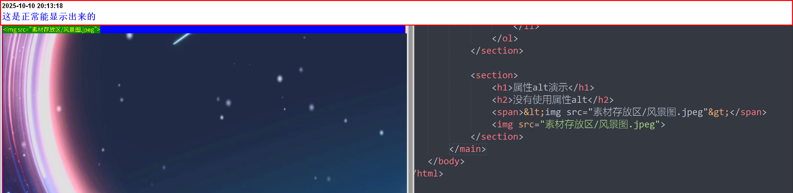
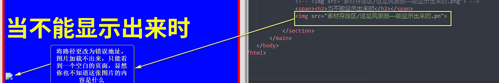
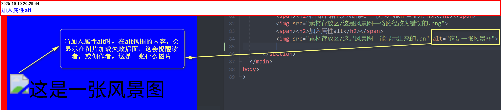
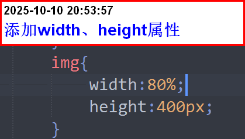
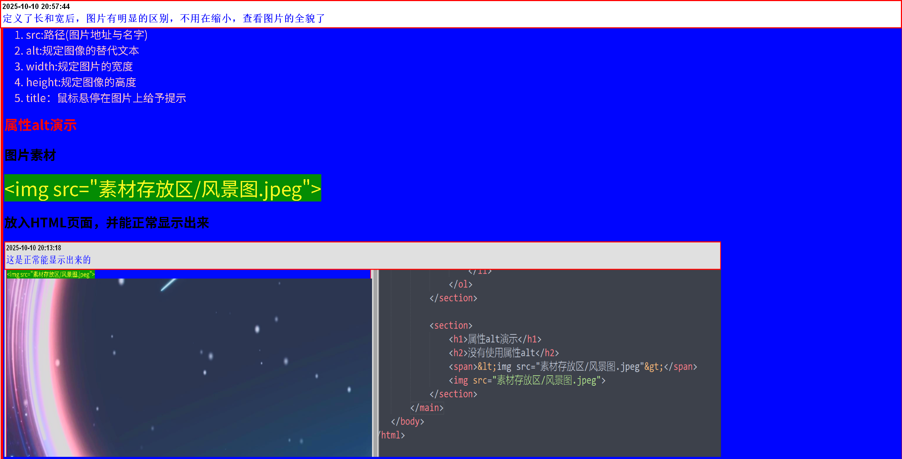

img标签的语法结构及注意事项
网站之中最多的元素毋庸置疑，一定是图片
img 标签定义HTML页面中的图像
<img src="内填写图片地址" alt="内填写当图片加载失败时，由里面的内容代替" title="鼠标悬停在图片上时显示的提示文本"
width="内设置的是图片的宽度" height="内设置的是图片的高度">
注意：
<img>是单标签，不需要进行任何闭合操作
img的属性及解释
- src:路径(图片地址与名字)
- alt:规定图像的替代文本
- width:规定图片的宽度(必须加入单位px或百分比%)
- height:规定图像的高度(必须加入单位px或百分比%)
- title：鼠标悬停在图片上给予提示
属性alt演示
图片素材
<img src="素材存放区/风景图.jpeg">放入HTML页面，并能正常显示出来
当不能显示出来时
将图片路径改为错误的，使他不能正常显示出来
加入属性alt，并演示
属性width、height演示
看，在alt的演示当中，图片太大了，在浏览器当中需要缩小才能看到，具体内容
所以我们需要通过属性width、height来改变图片的大小。
还未加入width\height的情况

因为我想更改所有图片的大小，使用行内调用速度太慢，所以采用内部调用，一次定义所有图片的CSS样式。
添加width、height属性的参数及效果演示 
总结：属性width和height，可以使图片尺寸产生变化，能使界面看起来更加舒适